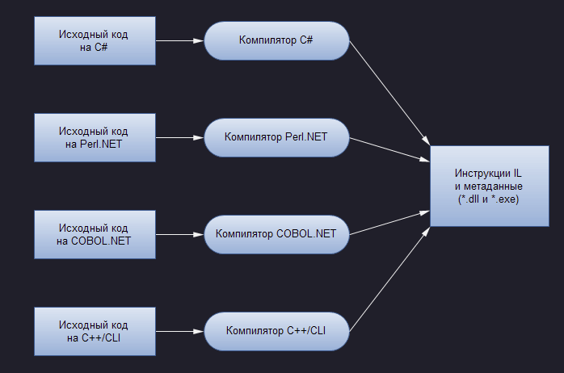

| Тема 5. Понятие сборки. | ||
| Назад | ||
|
Какой бы язык .NET не выбирался для программирования, важно понимать, что хотя двоичные .NET-единицы имеют такое же файловое расширение, как и двоичные единицы СОМ-серверов и неуправляемых программ Win32 (* . dll или * . ехе), внутренне они устроены абсолютно по-другому. Например, двоичные .NET-единицы * .dll не экспортируют методы для упрощения взаимодействия с исполняющей средой СОМ (поскольку .NET — это не СОМ). Более того, они не описываются с помощью библиотек СОМ-типов и не регистрируются в системном реестре. Пожалуй, самым важным является то, что они содержат не специфические, а наоборот, не зависящие от платформы инструкции на промежуточном языке (Intermediate Language — IL), а также метаданные типов. На следующей схеме показано, как все это выглядит:  Компиляция инструкций IL и метаданных Отсюда следует, что сборка (assembly) — это логическая единица, содержащая скомпилированный код для .NET Framework, т.е. это полностью самодостаточный и скорее логический, нежели физический элемент. Это значит, что он может быть сохранен в более чем одном файле (хотя динамические сборки хранятся в памяти, а вовсе не в файлах). Если сборка хранится в более чем одном файле, то должен существовать один главный файл, содержащий точку входа и описывающий остальные файлы. Следует отметить, что одна и та же структура сборки используется как для исполняемого кода, так и для кода библиотек. Единственное реальное отличие исполняемой сборки заключается в том, что она содержит главную точку входа программы, тогда как библиотечная сборка — нет. Важное свойство сборок состоит в том, что они содержат метаданные, которые описывают типы и методы, определенные в ее коде. Помимо этого сборка хранит в себе метаданные, описывающие ее саму. Эти метаданные, хранимые в области манифеста, позволяют выполнять проверку номера версии сборки и ее целостность. Тот факт, что сборка содержит метаданные программы, означает, что приложение или другие сборки, которые вызывают код данной, не нуждаются в обращении к реестру или любому другому источнику данных, чтобы узнать, как конкретную сборку следует использовать. Это существенный прорыв по сравнению со старым способом работы СОМ, когда GUID-идентификаторы компонентов и интерфейсов необходимо было извлекать из реестра, а подробности методов и свойств в некоторых случаях читать из библиотеки типов. Хранение данных в трех различных местах приводило к очевидному риску получить несинхронизированные части, что исключало возможность использования данного компонента другим программным обеспечением. Что касается сборок, то здесь риск подобного рода исключен, потому что все метаданные хранятся вместе с выполняемыми инструкциями программы. Следует отметить, что несмотря на то, что сборки могут храниться в нескольких файлах, проблема синхронизации не возникает, поскольку в том же файле, где находится точка входа, хранится и информация о содержимом остальных файлов. То есть даже если один из них подменить или испортить, то это немедленно будет обнаружено, и всей сборке будет запрещено загружаться на выполнение. Сборки бывают двух видов: разделяемые и приватные. Приватные сборки Это простейший тип сборок. Обычно они поставляются с определенным программным обеспечением и предназначены для применения только в его составе. Обычный сценарий получения приватной сборки — это когда приложение поставляется в виде исполняемой программы и множества библиотек, код которых может быть использован только этим приложением. Система гарантирует, что приватные сборки не будут применяться другим программным обеспечением, потому что приложение может загружать только приватные сборки, находящиеся в той же папке, где хранится и главная исполняемая программа, которая их загружает, либо во вложенных папках. Поскольку обычно можно рассчитывать на то, что коммерческое программное обеспечение всегда устанавливается в собственный каталог, значит, нет опасности того, что один программный пакет перепишет, модифицирует или непреднамеренно загрузит приватные сборки, принадлежащие другому пакету. Поскольку приватные сборки могут быть использованы только тем пакетом программного обеспечения, для которого они предназначены, имеется возможность управлять тем программным обеспечением, которое их использует. Отсюда уменьшается необходимость в некоторых предосторожностях для обеспечения безопасности, поскольку нет риска, например, того, что какое-то коммерческое программное обеспечение перепишет сборки их новыми версиями (за исключением случаев, когда программное обеспечение специально разработано для нанесения определенного вреда). Не существует также проблемы коллизии имен. Если окажется, что классы в приватной сборке имеют те же имена, что и классы в чьей-то чужой приватной сборке, то это не имеет значения, поскольку каждое приложение будет в состоянии видеть только один набор собственных приватных сборок. Поскольку приватная сборка полностью самодостаточна, процесс ее развертывания весьма прост. Вы просто помещаете соответствующий файл (или файлы) в соответствующую папку системы (никаких записей вносить в реестр не потребуется). Этот процесс известен как установка с нулевым воздействием или установка с помощью хсору (zero impact (хсору) installation). Разделяемые сборки Назначение разделяемых сборок — служить библиотеками общего применения, которые могут использоваться любым другим приложением. Поскольку любое другое приложение может получить доступ к разделяемой сборке, возникает необходимость в некоторых предосторожностях, чтобы исключить описанные ниже риски. Коллизия имен, когда разделяемая сборка, поставленная другой компанией, реализует типы с теми же именами, что используются в вашей сборке. Поскольку клиентский код теоретически может иметь доступ к двум таким сборкам одновременно, это может представлять серьезную проблему. Риск того, что данная сборка будет перезаписана другой версией той же сборки, и новая версия окажется несовместимой с некоторым существующим клиентским кодом. Решение этих проблем включает размещение разделенных сборок в специальном поддереве каталогов файловой системы, известном под названием глобальный кэш сборок (global assembly cache — GAC). В отличие от приватных сборок, это не может быть сделано простым копированием сборки в определенную папку — сборку понадобится специальным образом установить в кэше GAC. Данный процесс может быть реализован с помощью множества утилит .NET и включает в себя выполнение необходимых проверок устанавливаемой сборки, а также создание небольшой иерархии папок в пределах GAC, используемых для обеспечения целостности сборок. Чтобы исключить коллизии имен, разделяемым сборкам назначаются имена, основанные на шифровании индивидуальным ключом (в отличие от приватных сборок, которым дается имя, совпадающее с именем главного файла). Это имя, известное как строгое имя, гарантированно является уникальным, и оно должно указываться приложением, ссылающимся на данную разделенную сборку. Проблемы, связанные с риском перезаписи сборки, решаются указанием информации о версии в манифесте сборки, а также возможностью параллельных установок различных версий данной сборки. Однофайловые и многофайловые сборки В большом количестве случаев между сборками .NET и файлами двоичного кода (*.dll или *.ехе) соблюдается простое соответствие "один к одному". Следовательно, получается, что при построении *.dll-библиотеки .NET, можно спокойно полагать, что файл двоичного кода и сборка представляют собой одно и то же, и что, аналогичным образом, при построении исполняемого приложения для настольной системы на файл *.ехе можно ссылаться как на саму сборку. Однако это не совсем так. С технической точки зрения, сборка, состоящая из одного единственного модуля *.dll или *.ехе, называется однофайловой сборкой. В однофайловых сборках все необходимые CIL-инструкции, метаданные и манифесты содержатся в одном автономном четко определенном пакете. Многофайловые сборки, в свою очередь, состоят из множества файлов двоичного кода .NET, каждый из которых называется модулем (module). При построении многофайловой сборки в одном из ее модулей (называемом первичным или главным (primary) модулем) содержится манифест всей самой сборки (и, возможно, СIL-инструкции и метаданные по различным типам), а во всех остальных — манифест, CIL-инструкции и метаданные типов, охватывающие уровень только соответствующего модуля. Как нетрудно догадаться, в главном модуле содержится описание набора требуемых дополнительных модулей внутри манифеста сборки. |
||
| Конспект подготовлен Бакулиным А. М. 2022 год. | ||